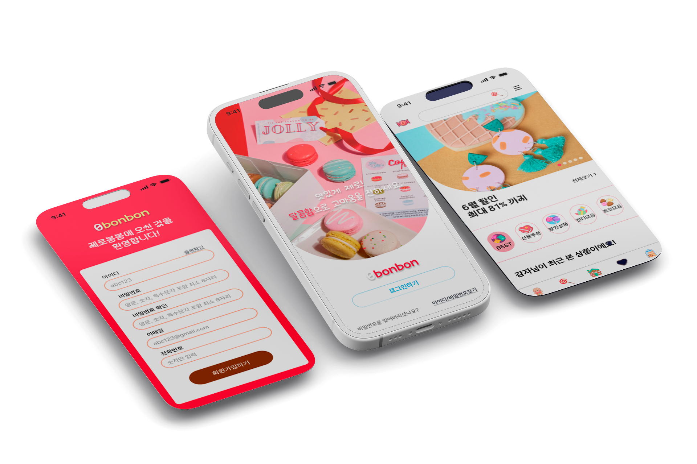
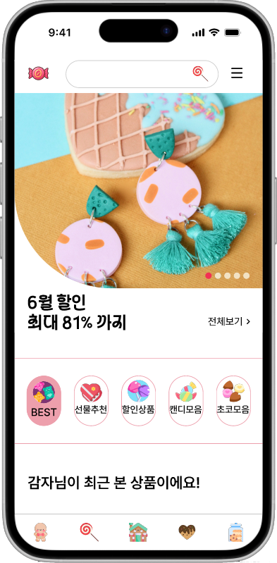
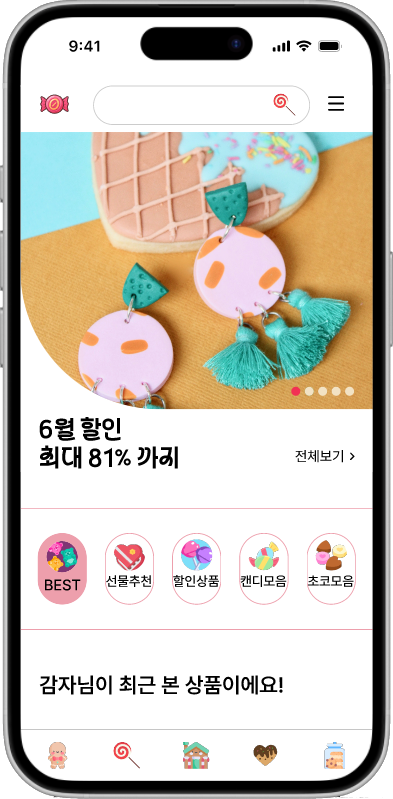

2025
- AboutMe
- ColneCoding
- Design
- Project
AboutMe
Name: Back inhye
Birth: 96.10.28
Address: 0316yang1@gmail.com
experience
- JUNGBU University Graduation
- 2022-2024 Middle school Work as a teacher
- 2025 KDT Traning Completion
license
- A hygienist Grade II
- A driver's license I
- Food Processing Teacher Grade II
skills
- HTML
- CSS
- JS
- React
- Figma
- Ps
- Ai
- Pr
- Ae
Education
- Food Processing&Bio Science
- Food Nutritional Science
- UI/UX Learning
My Strength
#Positive
다양한 클레임을 상대하며 감정적 이슈와 관계 속 갈등을 잘 해결하는 방법을 터득하여 힘든 일을 이겨내는 탄력성이 높습니다.
#Brightness
프로젝트 활동에서 적극적인 피드백과 커뮤니케이션을 담당했습니다.
프로젝트의
UI디자인은 대부분 제 피드백을 통해 수정되었습니다. 팀의 리듬을
만드는 타입의 사람으로 봐주시면 좋겠습니다.
#Curios
길거리 배너나 슬로건을 봐도 지나치지 않고 사진을
찍어뒀다가 왜 이런 디자인으로 만들었는지, 어떻게 제작했는지
친구들과 토의하는 것을 즐깁니다.
#Unique
브랜드 디자인을 전공한 친구의 영향으로 남들과 다른 독특한 디자인을
즐기고, 실전에 활용합니다.
02
ColneCoding
- HTML
- CSS
- JS
- Ps
- Ai
Lenear
Production period: 48h 35m
SoundLAB
Production period: 24h 11m

03
Contents Design
- Figma
- Ps
- Ai
0bonbon
Over View대체당에 관한 관심이 높아지면서 대체당을 중심으로 판매하는 모바일 사이트를 디자인 해보았습니다. 컬러풀한 사탕의 색상과 어우러지는 선명한 채도와 부드럽고 따듯한 안정감을 주는 배경색을 사용하였습니다.
FontPretendard variable, OwnglyphPDH, HsSantikki2.0
Color

 

Posters
다양한 분야의 포스터를 제작해보았습니다.
04
Project
- HTML
- CSS
- JS
- Ps
- Ai
- Pr
- Ae
W'z play
제작기간: 27Days
제작인원: 김00,김00,백인혜,조00
Project Point
1. 기존 OTT플랫폼과 차별화된 기능
2. 사용자 친화적인 동선
3. 새로운 디자인의 UI시도
 https://github.com/whiteene-cmd/W-z.git
https://github.com/whiteene-cmd/W-z.git wzplay100ene.netlify.app
wzplay100ene.netlify.appGirtaPoint
Design
OTT특성상 가로 드래그의 단순 반복이 많아 디자인이 투박하고 단조로움.
국내, 해외 ott사이트를 둘러보며 영역별 디자인을 전부 살펴보고 좋은 부분을 카피함. 각 영역별 새로운 느낌을 주는 다른 ui를 구성할 수 있게됨.
Tecnology
장르별 콘텐츠의 모든 페이지를 제작하려면 96개의 html이 필요하며, 페이지마다 영상을 넣을 경우 사이트 용량이 너무 커짐
반복되는 페이지는 JSON파일을 사용해 랜덤으로 동적 랜더링함. 영상을 코드에 직접 넣지 말고, 유튜브 링크를 끌어와 작성함. 예상 용량 3GB를 1GB미만으로 줄여냄.
Time
7일 안에 코딩해야하는데 페이지가 20페이지를 넘음.
"근성"